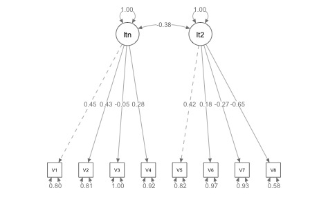
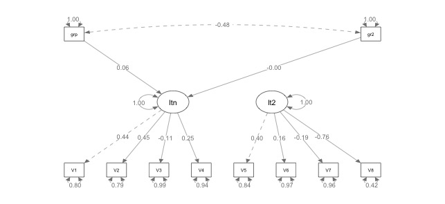

I was tagged today on twitter asking about categorical variables in lavaan. I will say I have not done much with categorical predictors either endogenous or exogenous. I did a quick reproducible example of exogenous variables, and I will refer you to the help guide for lavaan here.
You will need both the lavaan and psych packages to reproduce this code. Ironically, this data is binary outcome data (the epi dataset in psych), which wasn’t intentional, I just knew it was a good dataset to work with to test how to do exogenous categorical variables.
First, let’s make a model that works (I do assume you know a bit about lavaan here, feel free to ask questions):
#load libraries and data
library(psych)
library(lavaan)
DF = epi
#lavaan model syntax
epi.model = 'latent =~ V1+V2+V3+V4
latent2 =~ V5+V6+V7+V8'
#analyze the model
epi.fit = cfa(model = epi.model,
data = DF)
#show a summary
summary(epi.fit)
The cfa and summary did not throw any errors, so the model at least runs smoothly, even if it is not a “good” model. For good measure, you can also use semPlot to create a picture of this two-factor model:
library(semPlot)
#semPaths with basic options
semPaths(epi.fit,
whatLabels = "std",
edge.label.cex = 1)

Next, I created a fake dummy coded variable with three levels, although you could scale this easily with more levels:
DF$category = c(rep("group", nrow(epi)/3),
rep("group2", nrow(epi)/3),
rep("group3", nrow(epi)/3))
DF$category = as.factor(DF$category)
When I tried to run a new model with the category variable, lavaan was not happy:
Warning message:
In lav_data_full(data = data, group = group, cluster = cluster, :
lavaan WARNING: unordered factor(s) with more than 2 levels detected in data: category
Fine, let’s dummy code them with the gloriously easy dummy.code function in psych:
#dummy code and combine with DF
DF_dc = cbind(DF, dummy.code(DF$category))
However, I will warn you that psych does give you K columns where K = levels. Real dummy coding is K - 1 columns, so I find it odd that psych gives you K output. For example, it took our group, group2, group3 labels and transformed them into three new columns with 0 as not my group and 1 as my group. Therefore, I will advise you to pick your favorite combination of K - 1 levels, and do not use all of them or you will create a singular matrix that will be difficult to troubleshoot in any regression based analysis. Here’s an example of that error:
Error in lav_samplestats_icov(COV = cov[[g]], ridge = ridge, x.idx = x.idx[[g]], :
lavaan ERROR: sample covariance matrix is not positive-definite
I can add the first two to the model predicting one of the latents using ~ for regression rather than =~ for create a latent:
#model syntax
epi.model2 = 'latent =~ V1+V2+V3+V4
latent2 =~ V5+V6+V7+V8
latent ~ group
latent ~ group2'
#analyze the model with the new DF
epi.fit2 = cfa(model = epi.model2,
data = DF_dc)
#summarize the model
summary(epi.fit2)
In your output, you will get two new lines for regression:
Regressions:
Estimate Std.Err z-value P(>|z|)
latent ~
group 0.026 0.014 1.847 0.065
group2 -0.001 0.014 -0.082 0.935
The interpretation here would be that group = group 1 versus group 3 was related to/predicted latent at 0.026, so the difference in latent for group 1 to group 3 was 0.026. The second variable would be group2 = group 2 versus group 3, and they basically have no difference on latent. You can learn more about dummy coding here.
Here’s the picture of that analysis:
semPaths(epi.fit,
whatLabels = "std",
edge.label.cex = 1)

Remember that any endogenous variables will get automatically correlated … so now we have a second latent variable hanging out in space we would want to either predict with our dummy coded variables or do something with. So, I would probably either add the correlation between latents back in with: latent ~~ latent2 or add in the regressions for using the categoricals to predict latent2: latent2 ~ group and latent2 ~ group2.
More lavaan help can be found on my youtube channel!.